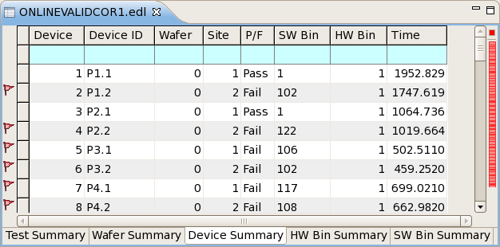

Device summary tab
The device summary tab of the summary view for a data store shows the consolidated results for all tests in the data store by device, displaying basic statistical evaluations for each device.
In addition to the columns describing each device, a device summary tab contains configurable fail and alert marks in the left and right margins, and it has a shortcut menu. All three elements are described below.
Table
The table in a device summary tab display in each row a summary for all test executions for a particular device. Clicking any field in a row selects the entire row (for example, for copying it).
The topmost row in the table (with a cyan background) is the table filter that lets you restrict which rows are displayed in the table by entering conditions. See Table filter for details.
A device summary tab can display these columns:
- Device: The number of the device. This number is assigned automatically by the Integrated Result Tool.
- Device ID: The device ID from the data log.
- Part ID: The part ID from the data log.
- Part Txt: The part description text (PART_TXT) from the data log.
- Testflow: The testflow number, which is created by the Integrated Result Tool and increases by 1 every time the testflow is run.
- Wafer: The number of the wafer on which the device is located.
- Site: The number of the site to which the device belongs.
- P/F: Whether the device ended up in a good bin (Pass) or bad bin (Fail).
- SW Bin: The number of the software bin in which the device was put by the test.
- HW Bin: The number of the hardware bin in which the device was put by the test.
- Time: The sum of all test execution times for this device.
- All Fail Bins: A comma-separated list of all software fail bins into which this device was put. This is useful if testing was done with overon enabled and a device may have reached multiple fail bins.
Which columns are displayed and the order in which they are displayed can be set in the preferences.
Clicking a column title sort the table by this column in ascending order (rows with
smaller values come first). This is indicated by a triangle  . Clicking again sorts the table by the column in descending order, which is indicated by
an upside-down triangle
. Clicking again sorts the table by the column in descending order, which is indicated by
an upside-down triangle  . Clicking again unsorts the table. (The rows are displayed in the order in which they
occur in the data store.)
. Clicking again unsorts the table. (The rows are displayed in the order in which they
occur in the data store.)
Marks in the annotation and overview rulers
The left and right margins of the tab contain indicators for failed tests and cells containing alerts.
The annotation ruler (the left margin) contains icons indicating rows with fails and alerts:
 The test summarized in this row failed for at least one device.
The test summarized in this row failed for at least one device. This row contains a cell with an alert.
This row contains a cell with an alert. This row contains both an alert and at least one failing test.
This row contains both an alert and at least one failing test.
You can disable icons for fails and/or alerts in the Annotations preference page. By default, both are enabled.
The overview ruler (right margin) contains a small colored rectangle for each row with a failed device and each row with an alert. Clicking a rectangle selects the corresponding row in the table. Hovering over a rectangle with the mouse displays a tooltip with the reason for the alert. Hovering over the small colored square in the upper right corner of the view displays a tooltip with the total numbers of failed rows and rows with alerts.
You can choose the colors in the Annotations preference page and disable one or both kinds of indicators. By default, indicators for alerts are yellow and indicators for fails are red; both kinds are enabled.
For more information on configuring fail indicators and alerts, see Highlighting specific data.
Shortcut menu
The shortcut menu of a device summary tab contains these commands:
- Refresh: Updates the system data log stream
display with the latest logged data when it is paused (see below), but does not turn on
automatic updating again, like Resume does.
This command is available only when the system data log stream is displayed in the tab.
- Pause: Stops automatic updating of tables
displaying the system data log stream.
This command is available only when the system data log stream is displayed in the tab.
- Resume: Restarts automatic updating of the
system data log stream.
This command is available only when the system data log stream is displayed in the tab.
- Clear: Removes all current entries from the system data log
stream display in the Integrated Result Tool and clears the system event stream.
This command is available only when the system data log stream is displayed in the tab.
- Save and Clear: Displays a standard Save dialog in which you
can save the current system event stream as an EDL file. After you have saved the file, all
current entries from the system data log stream display in the Integrated Result Tool are
removed and the system event stream is cleared.
This command is available only when the system data log stream is displayed in the tab.
- Show In: The command in this submenu lets you display the selected rows in the raw data view.
- Exclude: This submenu lets you specify which records to
exclude from the evaluation of the data store and display in the summary tabs. Records that you
exclude in this tab are also excluded in other tabs.
- Selection: Excludes the tests summarized in the selected rows.
- Other: Excludes all tests except those summarized in the selected rows.
- None: No test are excluded. If there are any exclusions currently in effect, they are ended.
- Width: This submenu includes the Autofit command that lets you make each column just wide enough to show all of its contents.
- Copy: Copies the selected rows to the clipboard as tab-separated text.
- Alerts: Opens the Alerts preference page.
- Preferences: Opens the Device Summary preference page.
Example

Functional changes
- Introduced in SmarTest 7.2.0
- SmarTest 7.2.1: Renamed some columns.
- SmarTest 7.2.2: Added several shortcut menu commands.
- SmarTest 7.2.3: Added Part ID and Part Txt columns.
- SmarTest 7.3.1: Added All Fail Bins column